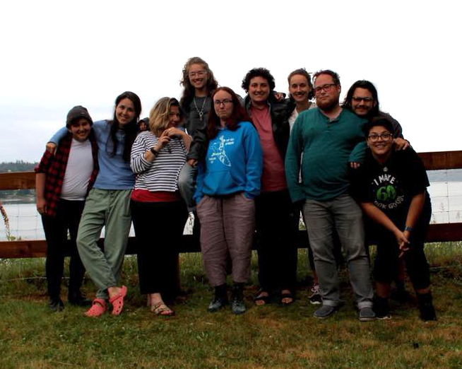
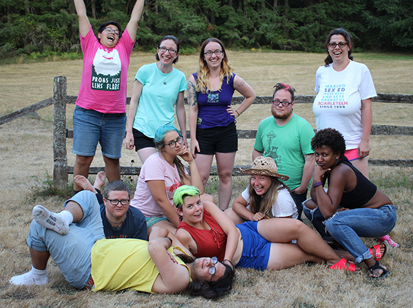

The Scarleteen Staff & Volunteers
 Heather Corinna: Founder, Director, Editor & Designer
Heather Corinna: Founder, Director, Editor & Designer
Heather is an activist, writer, artist, teacher and community organizer. Heather has been widely recognized as a pioneer of both women's and young adult sexuality information and education online, having brought inclusive, feminist, creative and comprehensive sexuality content to the web and beyond since 1997. Heather is the author of the inclusive, comprehensive and progressive sex, sexual health and relationships book for young adults, S.E.X: The All-You-Need-To-Know Sexuality Guide to Get You Through Your Teens and Twenties (DaCapo Press, 2007, 2017), now in its second edition, Wait, What?: A Comic Book Guide to Relationships, Bodies, and Growing Up (Oni Press, 2019), with Isabella Rotman, for older middle readers and younger teens, and the forthcoming What Fresh Hell Is This? Perimenopause, Menopause, Other Indignities and You -- A Guide (Hachette, 2021).
Heather has also been a sexuality, contraception and abortion educator and counselor for the Cedar River Clinics/Feminist Women's Health Center, and the director of the CONNECT teen outreach and education program in Seattle which serves transient/homeless youth, reproductive health patients, high school and college students and others. Heather is a previous member of the editorial board for the American Journal of Sexuality Education and the Board of Directors for NARAL Pro-Choice Washington, a writer and contributing editor for the 2011 edition of Our Bodies, Ourselves, and their young adult sexuality advice was previously syndicated at RH Reality Check (now Rewire).
Heather has won numerous awards, including The Champions of Sexual Literacy Award for Grassroots Activism from the National Sexuality Resource Center/SFSU in 2007; in 2009 the winner of the Society for the Scientific Study of Sexuality, Western Region's Public Service Award and the Our Bodies, Ourselves' Women's Health Heroes Award. In 2012, the Joan Helmich Educator of the Year award, and in 2013, The Woodhull Foundation's Vicki Award, for affirming sexual freedom as a fundamental human right. In 2015, Heather received the Steinem-Waters Award, given to a movement leader over 30 who has exhibited a consistent investment in developing young people in the field of reproductive justice, as well as the Golden Brick Award, recognizing their significant contributions to the field of sexuality education in the Untied States. They were also a lead plaintiff in the ACLU vs. Gonzales case, arguing against the Child Online Protection Act (COPA), which could have removed young adults' access to needed sexuality information, and Heather's work with Scarleteen -- and the import of our service -- helped secure an important win for the case.
Their work at Scarleteen and in sexuality education and activism has hailed acclaim or attention from numerous publications, including The Utne Reader, The City Pages, Alternet, The Seattle Post-Intelligencer, Siren, The Industry Standard, The Chicago Tribune, CNN, The Chicago Tribune's RedEye, The Nation, Feministing, The Minnesota Women's Press, The Boston Phoenix, Ms. Magazine, The New York Times, HipMama, Bust, Bitch, The Minneapolis Star-Tribune, the Oxygen Network, Estronet, Yahoo!, Lavender Magazine, and The Woman's Guide to Sex on the Web. Heather has been quoted in numerous articles about sexuality, appeared on many radio shows, and has lectured and given workshops and trainings at many youth and adult conferences, colleges, schools, clinics, bookstores and other community gatherings. Heather is also a member of the Association of Reproductive Health Professionals.
Their essays, fiction, poetry and artwork have appeared in their own publications as well as in Teen Vogue, The Guardian (UK), RH Reality Check (now Rewire) Issues Magazine, PIF Magazine, Maxi Magazine, Women's Studies; An inter-disciplinary journal; in the anthologies Yes Means Yes: Visions of Female Sexual Power and A World Without Rape, Viscera, The Adventures of Food, Aqua Erotica, Zaftig: Well-Rounded Erotica, The Mammoth Book of Best New Erotica 1 & 2, Shameless: An Intimate Erotica and Penthouse. Their photography and visual art have been shown at/in 555 Gallery, Sex Worker Visions (New York), Babes in Toyland, Jane's Guide, Michelle 7, On Our Backs, the Bryant-Lake Bowl, Trixx (to benefit the GLBT youth center, District 202), The Independent, The Mammoth Book of Erotic Women, SEAF 2004 and other venues. Heather has been quoted in other sexuality books, such as The Whole Lesbian Sex Book and The Mother's Guide to Sex, and their work has been used in a number of university, school and clinic curricula.
Heather was previously a classroom educator and taught in the Montessori method (AMS), and created and ran an independent preschool from 1992 - 1996. A graduate with honors of Chicago's Academy for the Arts, where they studied music and creative writing, Heather won a National Academy of Poets award in her teens. They continued their education at Shimer College, studying literature and sociology, then later studied at the Midwest Montessori Teacher Training Center. In addition, Heather is trained as a facilitator for Teen Talking Circles.
Heather is navigating middle age with as much grace as they can muster, and currently lives and works both on a rural island outside Seattle, Washington and in Chicago, Illinois. When not working themselves into an early grave, they can be found playing with their dog, hiking, communing with nature, making music, dreaming up art, and crafting tasty vegetarian delights in the kitchen while loudly crooning tunes from 70's AM radio, all of which the people who love them graciously tolerate without making too many jokes at their expense.
For more information or references, please email Heather. You can also view a (very much in need of an update, oh my goodness) online version of Heather's CV here.
Illustration of Heather by Scarleteen Artist-in-Residence Isabella Rotman!
Sam Wall, Assistant to the Director:
Sam started on her path towards Scarleteen as a LGBTQ advocate and peer educator at U.C Davis in 2009. She went on to write a sexual health column for The California Aggie and work for U.C Davis Health Education & Promotion as a sexual health educator. Sam found Scarleteen via Tumblr in 2013, and knew instantly she wanted to be a part of the organization. She joined the team as a volunteer and was thrilled to be brought on as staff in 2015. She answers message board and SMS/text questions, manages social media, writes advice columns and articles, and performs in-person sex ed for parents and young people alike. Sam holds an MSW from U.W Madison and is a Licensed Social Worker. She has experience as a rape crisis advocate/counselor and youth services facilitator. When not doing sex ed, Sam can be found playing roller derby, hiking with her spouse and wiener dog, raising carnivorous plants, writing about cryptids, or pointing out all the things wrong with modern dinosaur movies. She is a contributor to the recently published anthology Youth Sexualities: Public Feelings and Contemporary Cultural Politics. Her non-Scarleteen writing can be found at Death and The Maiden and Autostraddle.
The Rest of Our Gobsmackingly Awesome Volunteer and Staff Team:

Scarleteen Team Camp, 2018: left to right: Eli, Alice, Heather, Ruby, Sam, Chlöe, Siân, Mo, Jacob, Al.
Al has used and loved Scarleteen since they were a sad and sexually confused preteen. They are currently working as a health educator on a college campus, and their favorite thing about being a burgeoning sexpert is constantly telling people, "yeah, that's totally normal". They are a firm believer in strong coffee, letting yourself grow, and watching bugs.
Alice found Scarleteen while writing a sociology paper on the politics of sex education, and loved what she found. After being a Scarleteen fangirl from afar for a few years, she began working with the organization, mostly in direct service. She also runs the Scarleten Instagram. She deeply believes that everyone has a right to comprehensive, progressive, and inclusive sex education. Along with doing health education, Alice is a preschool teacher. She loves collaging, swimming, and watching coming-of-age films.
Ashleah is a social worker who just wants to talk about sex! She loves working with teens and advocating for their rights to access to sexual healthcare and have quality education. Ashleah has played the role of prevention educator several times and has always used Scarleteen to inform her work. When Ashleah is not obsessing over sex & sexuality, she is on Pinterest planning her life, interpreting her dreams, or cooking meals with her son. She also enjoys superheroes (but thinks the villains are better), mythical beings and the supernatural.
Chanté is a Scarleteen evangelist. Her professional background entails Organizational Development, Social Innovation, Health and Well-being and Community Engagement. She holds a Bachelor of Science in Nursing (BSN) from Mount Mercy University and an M.A. from St. Catherine University in Saint Paul, MN. She has spent the last 15 years dedicated to the RJ movement -- her career began at Planned Parenthood and thereafter she went on to serve as Director of Parent Programs & Community Outreach at MyHealth (formerly West Suburban Teen Clinic), joined forces with the Hennepin County Teen Parent Connection and continued to serve as a mentor and volunteer sex educator. Chanté is also founder of The Darkest Horse, a digital media production company that spotlights on women, minorities and underrepresented leaders in tech. This new project arose from her fierce dedication to diversity, equity and inclusion. She is a proud mother of twin boys and resides in Chicago with her family.
Edith is a relentless dreamer and globetrotter by choice. Always moving from one place to another with no more than her computer, camera, dog, memories and some music. You can find her having long conversations with the moon at midnight. Edith came to Scarleteen because she truly believes in the power of education, has always had questions and loves places that have answers. She loves art, books, coffee and choices, and believes in the possibility of a better world where, one day, everybody will feel safe enough to smile, dance, love and be loved. (currently on leave)
Isabella Rotman, our artist-in-residence, is a Chicago cartoonist and illustrator from Maine who truly cares about your genital well being. She is the author of the queer and quirky sexual health book You’re So Sexy When You Aren’t Transmitting STDs and a recent graduate from the School of the Art Institute of Chicago. Other than educational comics, Isabella’s art is usually about the ocean, mermaids, crushing loneliness, people in the woods, or sex. If any of the above interests you then you may enjoy her self published comics or blog ThisMightHurt.Tumblr.com.

Scarleteen Team Camp, 2016: left to right, back row: Al, Karyn, Sam, Mo, Casey; middle: s.e., Isabella, Jenn, Heather, Ashleah; front: Jacob.
Jacob has been with Scarleteen since 2007 and they were a teen. They are based in Leeds in the UK and are a youth worker, with additional geeky powers who works in community sexual health, and have another job in digital healthcare. They support young people on the message boards, especially on issues of relationships, abuse and queer identity. They contribute written content, occasional graphics and frequent bad puns to the website. They do in-person outreach for Scarleteen in the UK. Also, they talk to cats, ride a pink bicycle and love making stuff.
Mo is a long-time Scarleteen reader and supporter who started volunteering in 2013. He trained as a crisis response volunteer with the Orange County Rape Crisis Center of Chapel Hill and has been involved with several support & social groups for trans* folks, both in central North Carolina and in the Bay Area. His areas of interest are varied, but usually center on gender identity, consent and communication in relationships, and support for survivors of rape and sexual assault. In his spare time he can be found climbing the hills of San Francisco, making delicious food, or reading. He will happily talk your ear off about roller derby.
Ruby decided when they were in middle school they'd be a sex educator (and was ruthlessly made fun of for it). They persisted, moving on to be part of a Teen Council through Planned Parenthood where she met Heather and found Scarleteen. Ruby is a student trying to figure out how to merge their interests of psychology, Deaf culture, sex education, and social justice. Ruby is mainly a chat volunteer, and occasionally does outreach with Heather and intends on developing a translation of Scarleteen's comprehensive curriculum to American Sign Language. In her free time, Ruby enjoys walking, warm drinks, learning, laughing, and hanging out with her snake, Lulu.
Stephanie has been volunteering for Scarleteen since 2008. She co-directs the SMS/text service, answers questions at the boards, and helps updating articles on the main site. Currently Stephanie is a Special Education and Sexual Education teacher for an Alternative School in the Johnstown area. She loves to travel and hopes to see the world.
Beyond being incredibly valuable to us, our young adult volunteers also get experience of value to them by volunteering at Scarleteen. Here's what a few of them have to say about it:
Scarleteen has been my virtual home-away-from-home for the past six years and counting, throughout many physical moves and positive life changes. I came for the information -- accurate, up-to-date, all-inclusive, and sex-positive -- and stayed for the community -- warm, welcoming, and worldly. It's currently about commitment for me -- I volunteer because, as I've said before, Scarleteen completely revolutionized the way I view sex and sexuality. Now I seek to help others feel that same sense of empowerment.
I like volunteering because I just freaking love it here. More specifically, I love the community aspect of it, the feeling that if all of us volunteers managed to get together in person, we'd probably stay up all night sharing stories, having awesome conversations, and laughing. It's also nice to know that I am far from the only person who cares about the issues we address here. I also love that I learn something new. Every. Single. Day. Whether it's a new fact, a new way of explaining something that makes it easier to understand, or a new perspective on something, I learn something every time I'm here.
I've also gotten started on a pretty awesome career because volunteering here helped me figure out what I was interested in, but that's just an added bonus, really.
I'm volunteering because Scarleteen's ethos of providing feminist, queer-positive, sex-positive and inclusive sex education to youth is what I'm passionate about, what I love to study, and what I need. I don't have access to any other public space where my whole sexual, messy, queer, curious self is encouraged and supported. By volunteering, I'm able to connect with like-minded others who believe that every human being has the fundamental right to honesty, knowledge, care and pleasure. Even though this is an online service, knowing that I am part of a shared project gives me the confidence to carry these conversations and this activist work into my day-to-day life.
Our Writing Team
Our director and several other members of our general staff have created our written content, but we have also benefitted from a fantastic freelance team. Some of our most recent content is due to the talents of:
- Liz Duck-Chong: Liz is a writer, sexual health nerd and photographer who has had articles, interviews and reviews for a range of publications. She co-hosts wholesome sex ed show @letsdoitpodcast, which carefully signposts which episodes are and aren’t 18+.
- Andrew Gurza: Andrew is a disability consultant, writer, and podcaster who has been widely featured on the internet. He travels all over the world talking about what it means to be a “queer cripple” and exploring the intersectionality of queerness and disability. You can follow his work on Twitter @andrewgurza and can hire him at www.andrewgurza.com.
- Manola Secaira: Manola is a writer with special interest in Latinx and environmental justice. She’s based in Seattle, Washington, and has written for sites like Grist and Seattle Met. You can also find her on Twitter…a lot.
- Alaina Leary: Alaina Leary is an editor, social media manager, and activist living in Boston, Massachusetts. She is a social media assistant for We Need Diverse Books. Her work has been published in Washington Post, Boston Globe Magazine, Cosmopolitan, Teen Vogue, Chicago Tribune, Seventeen, Marie Claire, and more. You can find her on Twitter and Instagram @alainaskeys.
- Bex Shea: Bex writes articles about trans and queer life, media reviews, and social justice issues. They also write fiction about science and magic. When not writing or reading, Bex enjoys roleplaying games, road trips, and paying tribute to their feline overlord.
- Emily Joy: Emily Joy Allison-Hearn is a bisexual married polyamorous poet and yoga teacher who also happens to have a degree in theology and apologetics from Moody Bible Institute. Emily works and writes at the intersection of faith, sexuality and religious trauma, and her passion is to help people break free from purity culture and empower them to embrace sex-positivity in their everyday lives. She tweets too much at @emilyjoypoetry and her other work can be found at www.emilyjoypoetry.com.
- Hannah Boning: Hannah Boning is a queer theologian-poet, cat mom, and recent graduate of Duke Divinity School. She is passionate about making space for shame-free discussion about healthy sexuality for people who were raised in faith-based sex-negative communities. You can find her on Twitter yelling about social justice and the church at @hannahboning and yelling about sex and the church with Emily Joy at @impurityculture.
Scarleteen Advisors
We often ask respected supporters, friends and colleagues to look something over for a second opinion or additional information we need, or for consult with some part of the website or organization. Following is a list of some of the individuals we'd like to recognize and acknowledge for their ongoing availability to give us help and advice:
- Aspen Baker, Co-Founder and Executive Director, Exhale
- Hanne Blank, Author Big, Big Love and Virgin: The Untouched History
- Becky Cavender, Cedar River Clinics
- Laurel Chance
- Ronete Cohen, psychologist, The Rainbow Couch
- Sarah Dopp, Genderfork
- Ann Douglas, parenting expert and author, The Mother of All Pregnancy Books and The Mother of All Parenting Books
- Dr. Jessica Fields, Associate Professor of Sociology at San Francisco State University and Senior Researcher at the Center for Research on Gender and Sexuality
- Rev. Debra Haffner, Director, The Religious Institute on Sexual Morality, Justice, and Healing
- Dr. Marty Klein, therapist and author
- Elizabeth Rae Larson, MS, DHS, LMHC, FAACS, Director, Seattle Institute for Sex Therapy, Education & Research
- Dr. Logan Levkoff, Sexologist and Author
- Dr. Ruth Neustifter, relationship coach and sexuality educator
- Amie Newman, Managing Editor, RH Reality Check
- Judy Norsigian, Executive Director, Our Bodies Ourselves
- Dr. Deborah Oyer, Medical Director, Aurora Medical Services
- Dr. Carol Queen, Center for Sex and Culture
- Audacia Ray, Program Officer for Online Communications and Campaigns, the International Women’s Health Coalition and co-founder of Sex Work Awareness
- Cory Silverberg, About.Com Sexuality Guide
- Rev. Leela Sinha
- s.e. smith
- Audra Williams, Lefty Lucy Communications
- Ben Wizner, ACLU Attorney (for identification purposes only)
Special recognition is due to Hanne Blank, who has been advising us on Scarleteen right from the start, and who played a big role with development of the site from its inception.
Other Contributors
Other authors and educators who have generously contributed content to Scarleteen in the early years, when we had fewer ways to give all the props, include Hanne Blank, Audra Williams, James Elliott, Emira Mears, Ophira Edut, Caro Buccheim, Malcolm Gin, Janel Hamner, Clare Sainsbury, M. Christian, Kythryne Aisling, Laurel Martinez, and Josh Cuppage.
Credits
A huge shout-out to the magnificent Garrett Coakley, developer extraordinaire and dear friend, for his generous help building the first Drupal version of Scarleteen, which was a Herculean task. The current version of Scarleteen is still fueled by the open source platform Drupal.